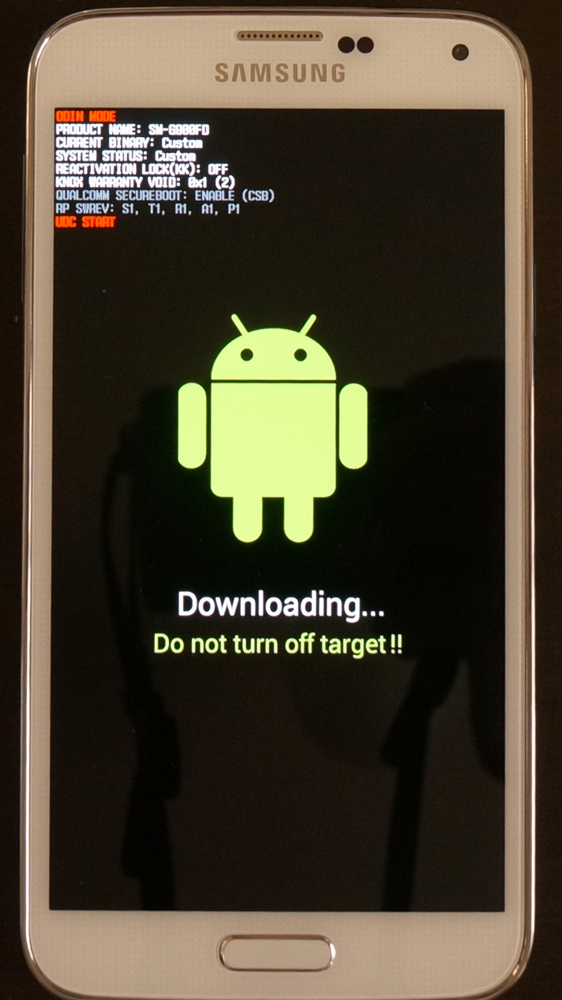
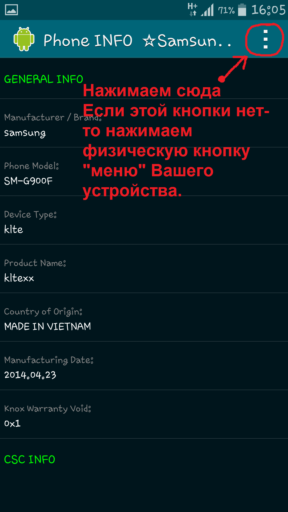
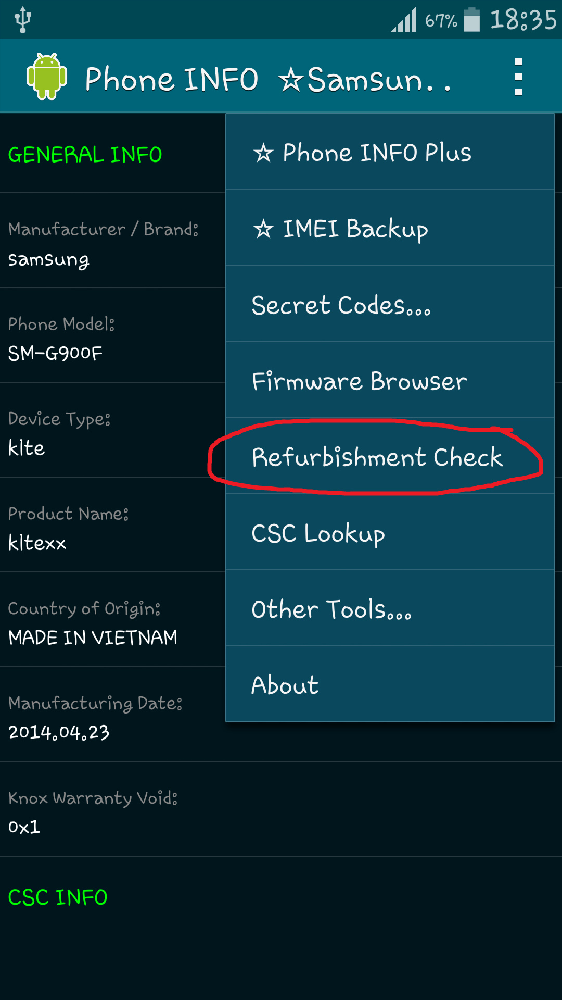
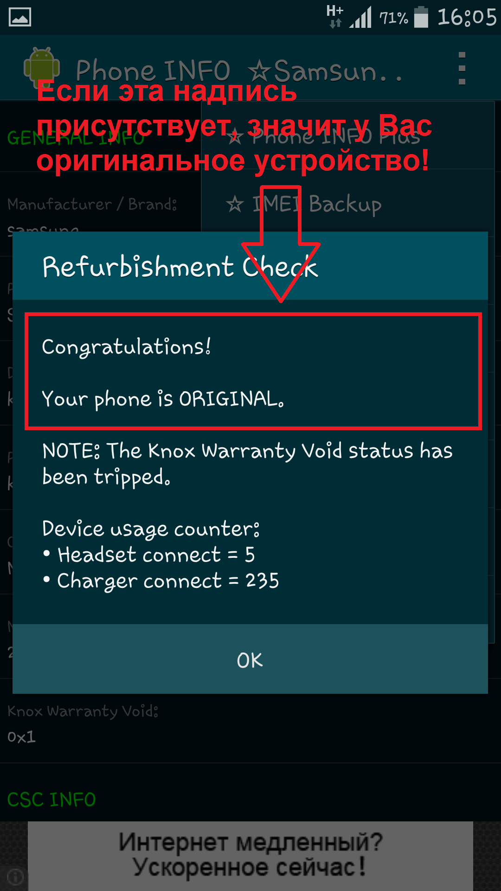
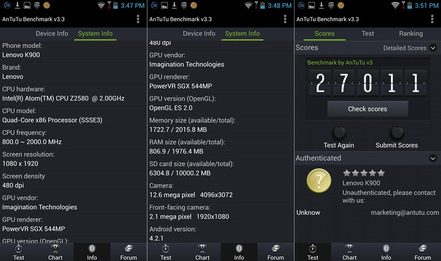

Как отличить оригинал устройства от подделки
Многие
люди, покупая устройство с рук или в непроверенных интернет-магазинах,
встречаются с подделками. Обычно явных внешних различий между оригиналом и
подделкой нет, определить можно только по "внутренним" факторам.
Сейчас мы их и разберем!
1) Самый простой способ- зайти в так называемый Odin Mode (режим прошивки). У копии его просто нет.
Полностью выключаем устройство и зажимаем клавиши громкости вниз+питание+домой, потом нажимаем кнопку увеличения громкости для подтверждения выбора, после этого вы должны попасть в Odin Mode.
Выглядит он примерно так:

(Надписи могут быть другие)
Если зайти в Odin Mode не получается, или открывается непонятная менюшка с иероглифами- значит это подделка.
Если Вы покупаете старую модель смартфона, то вместо Odin Mode на экране, посередине, на черном фоне, должна быть желтая надпись Downloading.
2) Также для проверки на оригинальность скачайте программу Phone INFO ★Samsung★ и откройте ее на покупаемом устройстве.
Откройте
контекстное меню программы (три точки) и нажмите на пункт Refurbishment
check.


Открывается диалоговое окно. Если в нем написано:
Congratulations! Your phone is original- это означает, что у Вас
оригинальное устройство.

3) В
копии как правило изначально зашита программа Antutu Benchmark и
обновить или удалить ее через маркет нельзя, она очень сильно
отличается от новой версии.
Выглядит примерно вот так:

Естественно результаты тестирования в этой версии Antutu являются фейковыми.
4) Перед покупкой устройства ознакомьтесь с его техническими характеристиками, а особенно с разрешением экрана.
Например, Samsung Galaxy S5 имеет FULL HD разрешение 1920х1080. Китайцы
обычно штампуют копии с разрешением HD (1280х720).
Теперь мы, чтобы узнать, какое разрешение имеет покупаемое устройство, проделаем следующее:
делаем скриншот дисплея комбинациями клавиш кнопка питание + кнопка домой (одновременно нажимаем и удерживаем).
Устройство сделало скриншот, о чем нам говорит уведомление в строке
состояния. Открываем шторку, переходим на изображение, и вот оно. Открыв СВЕДЕНИЯ о скриншоте, мы видим его
разрешение. Сравниваем полученное разрешение, и разрешение, указанное в
официальных технических характеристиках устройства. Делаем выводы.
6) Перед покупкой потребуйте коробку от устройства, проверьте соответствие IMEI на коробке и в настройках устройства...
Позвоните в техническую поддержку SAMSUNG по бесплатному номеру
8-800-555-55-55 (Для России), и продиктуйте оператору
IMEI.
После этого они Вам скажут, оригинал это, или нет.
Также, отличить копию от оригинала можно и по комплектации. Перед покупкой посмотрите в интернете
комплектацию, внимательно изучите надписи на коробке.
И конечно, очень рекомендую перед покупкой пойти в проверенный
магазин, например "Связной", и покрутить в руках оригинал.
Я думаю это очень поможет Вам в будущем выбрать оригинал, а не подделку.